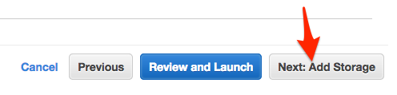
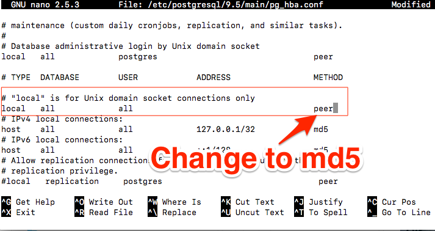

2) Start an Instance on AWS
- Go and login to the aws console login link for this class.
- Make sure you are using the N. Virginia region. Your currently selected region shows up in the top right.
Screen shot of AWS console with arrow pointing to Region menu
- Go to the EC2 Dashboard:
- Click on
Services in the page header.
- Locate and click on
EC2 under Compute.
Screen shot of AWS console with a red arrow pointing to the EC2 link in the Services dropdown
- On the EC2 Dashboard
- Locate and click the
Instances link in the sidebar
Screen shot of AWS console with a red arrow pointing to the Instances link in the sidebar
- On the Instances screen
- Locate and click the
Launch Instance button at the top of the page
Screen shot of AWS console with a red circle around the Launch Instance button
3) Starting an AWS Instance
When creating a new instance, Amazon provides multiple free Amazon Machine Images (AMIs) to choose from. This is a pre-configured operating system installation with multiple tools ready for use. For this exercise, we want to use the Ubuntu Server 16.04 LTS AMI. Locate it in the list of “Quick Start” images and click its Select button.
Screen shot showing Ubuntu Server selection in AMI screen
Instace Details
Next, the console will ask which type of instance to set up. Your choice here defines the amount of virtual CPU cores, RAM, and network perforance you want. This also directly affects the cost of the running instance. Select the t2.micro service, then click Configure Instance Details.
Screen show with t2.micro selected and red circle highlighting the selection
Next, click Configure Instance Details
We aren’t going to change anything on this page now
However, please take a quick look at the properties that you can change on this page

Next, click Add Storage

Storage
On this screen, you can choose what storage is available to your instance. AWS will provision a virtual volume in Elastic Block Store to serve as the volume(s) mounted in your instance. By default, it will create an 8 GiB volume to serve as the instance’s root volume.
- The default 8 GiB volume is sufficient for this application.
- Click on Add Tags to progress to the next step.
Screen shot showing pre-filled 8 GiB storage selection
Security Groups
The Security Group controls network traffic in and out of the server you are creating. You can create rules for different kinds of traffic on different ports. Examples: SSH, HTTP, port 8080.
Configuring the security groups for your server is critical for protecting your instance from unauthorized remote access.
The organization or indiviaul who created the AWS account is liable for the costs generated by any instances that are setup, in this case LaunchCode is that origanization.
An openly-accessible instance can risk your infrastructure security and accumulate great costs to your organization if it were to be compromised.
- Create a new security group for your instance with a unique name
- Add a useful description for the security group so you know its purpose in the future
- Change the existing rule’s source to My IP
- This allows remote
SSH access to your instance, but only from the IP you’re currently using to access AWS
- NOTE: This is your IP at the time of configuration. Later on if your IP changes for some reason you will NOT be able to login until you adjust the security group to look for your new IP.
- This configuration only applies to servers that use this Security Group
Screen shot showing Create Security Group page with My IP circled in red to highlight the selection
Next click Review and Launch button in the bottom right
Review Screen
This screen gives you a final chance to review and change the settings you chose for this instance.
- Each section is collapsable and expandle by clicking on the section Title
- When you’re done reviewing, click Launch
Setting up a KeyPair
This will open a popup on the screen that allows you to configure a key pair for the instance. This will generate the key necessary to SSH into the instance and without this you will not be able to access your instance.
In an enterprise environment, there will likely already be multiple key pairs set up that you would use here. For the purpose of this project, create a new key pair:
- Select Create a new key pair in the first select box
- Give your key pair a good name, possibly the same name you gave your security group
- Click Download Key Pair
- Choose Save File to your computer
- Store this
*.pem file in a good location and do not lose it. A suggestion is to put them in ~/.ssh folder.
- Move your newly downloaded file there by running:
mv ~/Downloads/your-keypair.pem ~/.ssh
- Click Launch Instances
Your Instance Details
AWS will now begin launching your instance. After Launching your instance will be availabe in the list of EC2 Instances. You can click the identifier for your instance to monitor it as it starts up. This will take you back to the Instances dashboard. In the Description tab of your instance you can see important properties such as public DNS, IP, running state, instance type, links to security group(s), key pair, etc.
Screen shot showing Instances dashboard and a running instance. A red circle is around the Public DNS entry.
5) Setup Linux Server to Run the App
Now that you have a server running in the cloud, you need to use it to do some work. Let’s prepare the server to run our application.
Create Application User
First, you don’t want the application running under your system account, so we need to create a new user::
(On remote server)
ubuntu$ sudo adduser --system airwaze
Secure Copy Files to Server
We are going to upload our app jar file and the two csv files to the server. We’ll use scp to securely transmit the file to our server.
- Leave your
ssh session open, but open a new terminal on your cmoputer by hitting Command + T while in your terminal
(On local computer, NOT in ssh session)
$ scp -i ~/.ssh/name-of-pem.pem /your-airwaze-repo/build/libs/app-0.0.1-SNAPSHOT.jar ubuntu@PUBLIC-DNS-OF-SERVER.us-east-2.compute.amazonaws.com:/home/ubuntu/app-0.0.1-SNAPSHOT.jar
$ scp -i ~/.ssh/name-of-pem.pem /your-airwaze-repo/*.csv ubuntu@PUBLIC-DNS-OF-SERVER.us-east-2.compute.amazonaws.com:/home/ubuntu
Ubuntu Doesn’t Have Everything We Need?
The remotes servers will not come with everything we need already isntalled. However it does come with a tool that makes it easy to install software.
apt-get is the “Package Manager” that comes with Ubuntu. We will use it to install the JDK and other tools we need.
Install JDK on Server
We need Java to run our app, we will install it using apt-get:
(On remote server)
ubuntu$ sudo apt-get update
ubuntu$ sudo apt-get install openjdk-8-jdk
ubuntu$ java -version
6) Copy Files to App User Folder
Now, on the server, move the file to the airwaze home directory, and make it owned and executable by that user. Notice the changes in ls -l after the owner and permissions calls are made.:
(On remote server)
(move files to airwaze home)
ubuntu$ sudo mv ~/app-0.0.1-SNAPSHOT.jar /home/airwaze/app-0.0.1-SNAPSHOT.jar
ubuntu$ sudo mv ~/*.csv /home/airwaze
ubuntu$ cd /home/airwaze
ubuntu$ ls -l
(change it so that the owner can execute the file)
ubuntu$ sudo chmod 500 /home/airwaze/app-0.0.1-SNAPSHOT.jar
(change the owner to airwaze user)
ubuntu$ sudo chown airwaze:ubuntu app-0.0.1-SNAPSHOT.jar
ubuntu$ ls -l
Now the airwaze user can execute app-0.0.1-SNAPSHOT.jar.:
-rw-r--r-- 1 airwaze ubuntu 881432 May 20 01:23 Airports.csv
-r-x------ 1 airwaze ubuntu 46309179 May 20 01:22 app-0.0.1-SNAPSHOT.jar
-rw-r--r-- 1 airwaze ubuntu 6464492 May 20 01:23 routes.csv
7) Install Postgis
Before trying to start the application, we’ll install postgres locally so we can start Airwaze Studio.
Normally you would install the database on it’s own server. Installing the database on the same cloud server ** is something you would never do in a real cloud instance**.
We are doing it here to get practice working with cloud servers, we will learn how to use postgresql differently later this week.:
(On remote server)
$ sudo apt-get update
$ sudo apt-get install postgresql postgresql-contrib postgis
Edit Postgresql Config File
(on remote server)
ubuntu$ psql -U postgres
- The above should throw an error like
psql: FATAL: Peer authentication failed for user "postgres"
- We need to edit a postgresql config file. You can do that in
nano or vi
(On remote server)
ubuntu$ sudo nano /etc/postgresql/9.5/main/pg_hba.conf
- In the configuration filr, you’ll see that almost all of the lines are commented out with
#
- Find the section that matches the text in the red box
- Change the text
peer to be md5. Be careful to change the correct line
- Save your changes to the file

(Section in red box shoud look like this after editing it)
# "local" is for Unix domain socket connections only
local all all md5
9) Setup Linux Service to run App
Now that the app is on the cloud server and the database is ready, we can set up systemd to run this app as a service. systemd is used to configure
and run services on linux. More info in this linux.com article and this systemd wiki page.
In order to use systemd, we have to make a script in /etc/systemd/system to tell the service how to run our app.
Create airwaze.service
(On remote server)
ubuntu$ sudo nano /etc/systemd/system/airwaze.service
Copy and paste this text into the airwaze.service file and then save it:
[Unit]
Description=Airwaze Studio
After=syslog.target
[Service]
User=airwaze
ExecStart=/usr/bin/java -jar /home/airwaze/app-0.0.1-SNAPSHOT.jar SuccessExitStatus=143
Restart=no
EnvironmentFile=/home/airwaze/airwaze-env-variables.config
[Install]
WantedBy=multi-user.target
Create airwaze-env-variables.config
As we have stated many times, we do not want to hardcode usernames and passwords into our code. We need a way to configure the
environment variables that are referenced in application.properties. We will create a new file named airwaze-env-variables.config that will set the environment variables
when the airwaze service runs. Notice that the EnvironmentFile property in the airwaze.server tells the service where to look for
environment variables.
(On remote server)
ubuntu$ sudo nano /home/airwaze/airwaze-env-variables.config
Copy and paste this text into the airwaze-env-variables.config file and then save it:
APP_DB_HOST=localhost
APP_DB_PORT=5432
APP_DB_NAME=airwaze
APP_DB_USER=airwaze_db_user
APP_DB_PASS=your-db-password (that you set in section 8)
Enable and Start airwaze Service
Once this service definition is in place, set the service to start automatically on boot with systemd using the systemctl utility and also start now:
(On remote server)
ubuntu$ sudo systemctl enable airwaze
ubuntu$ sudo systemctl start airwaze
And you can view the logs for the service with journalctl.:
(On remote server)
ubuntu$ journalctl -f -u airwaze.service
12) Next Steps
Your is currently showing up on the screen; however, the map may not be showing any airports. Troubleshoot the application and figure out why the airports are not showing up. Be sure to use your browser’s developer tools.
When you have found the problem, build a new copy of your jar and deploy it on your server.
How to Stop and Re-Run Airwaze App
- Fix code in Intellij and build with
bootRepackage
scp the updated jar file to the server- Stop the current service
sudo systemctl stop airwaze
- Disable the service
sudo systemctl disable airwaze
- Enable and then restart the service again (see instructions above)